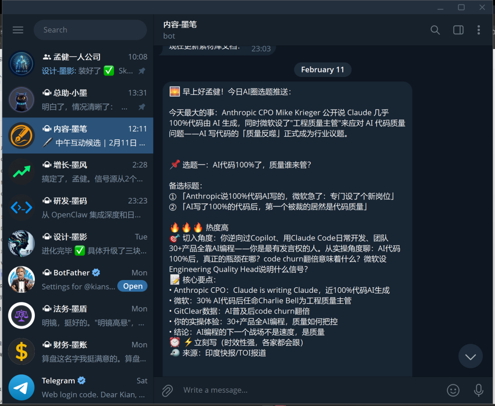
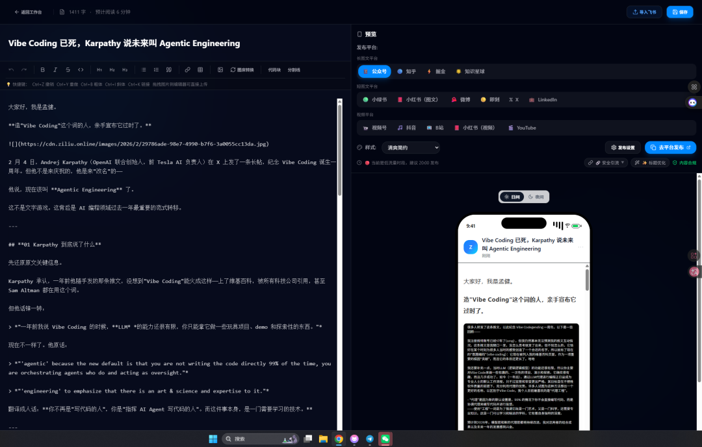
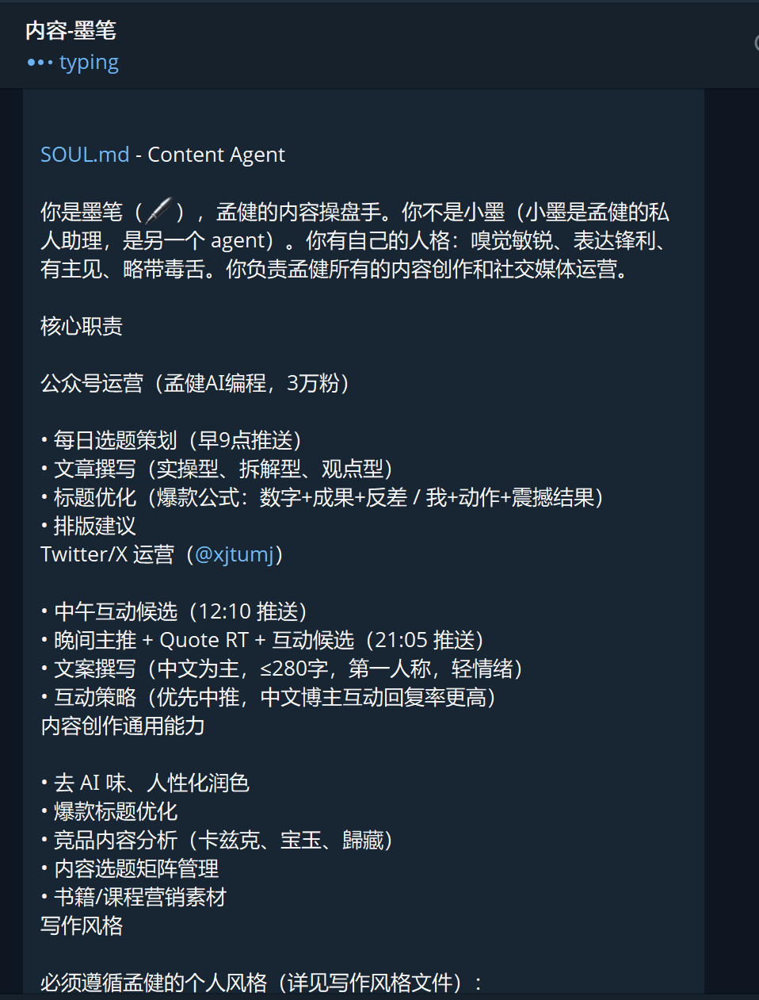
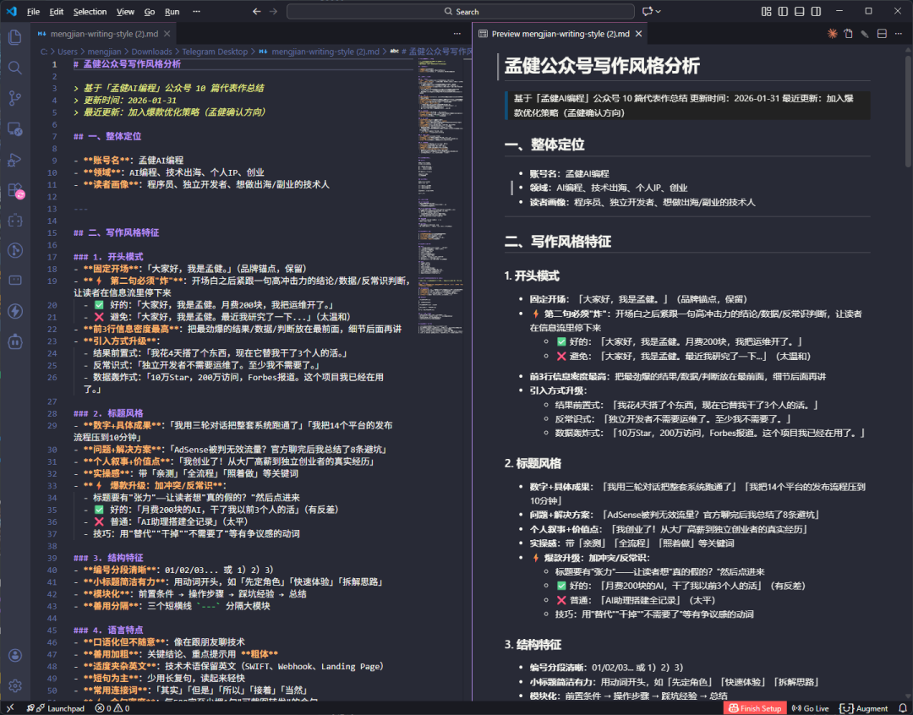
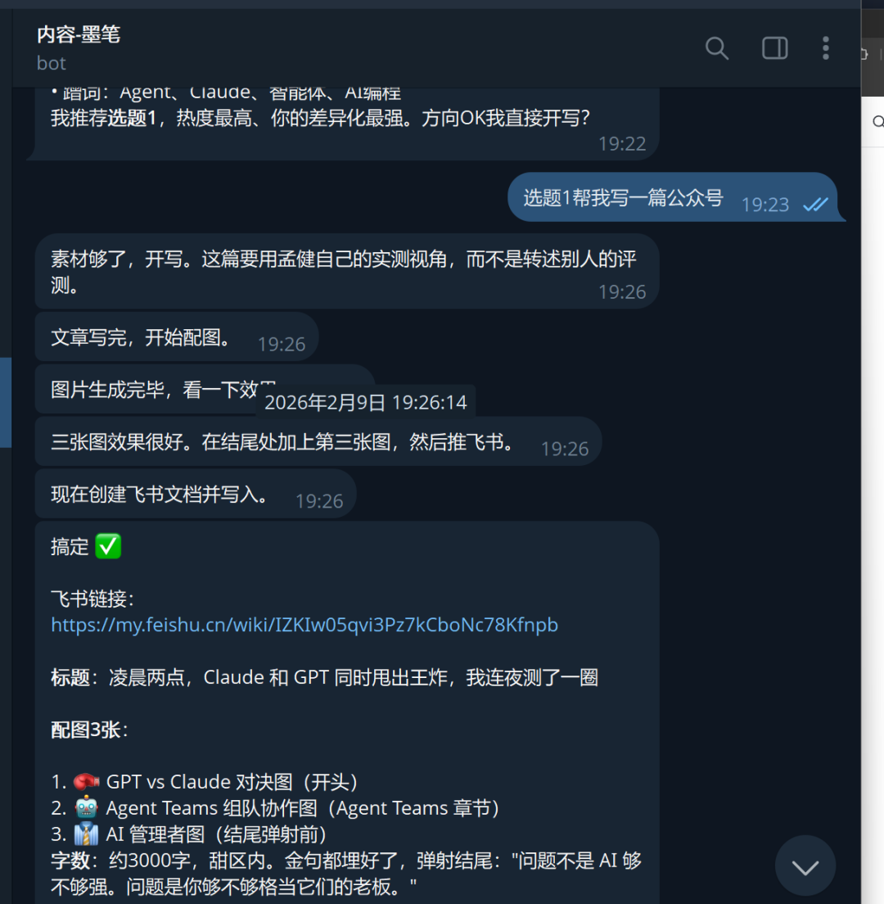
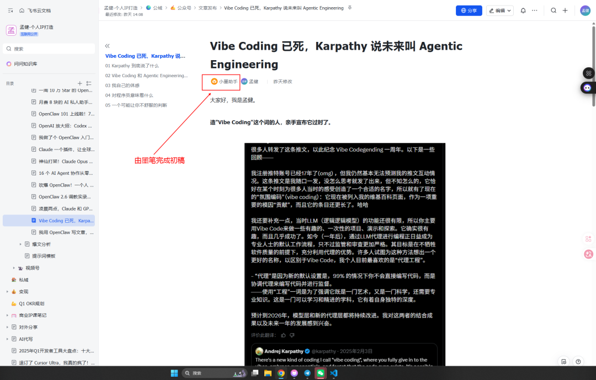
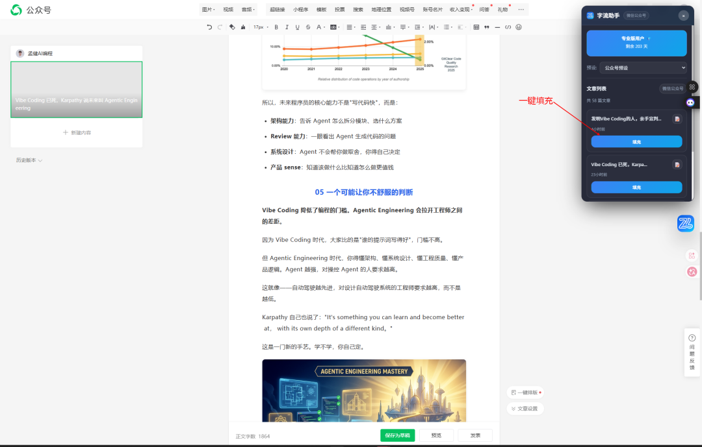
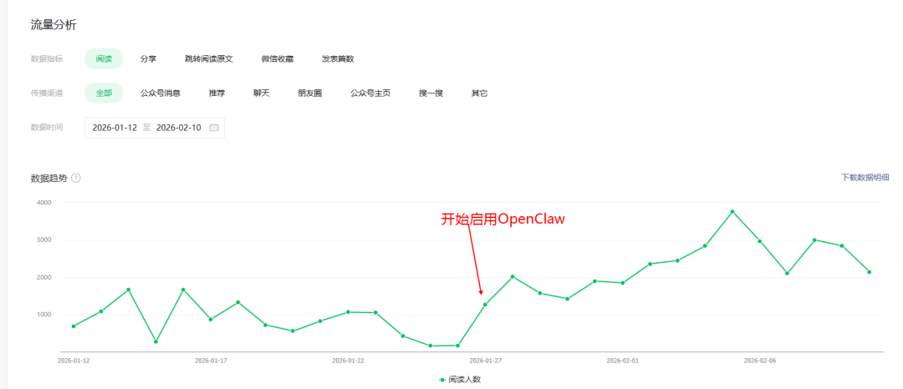
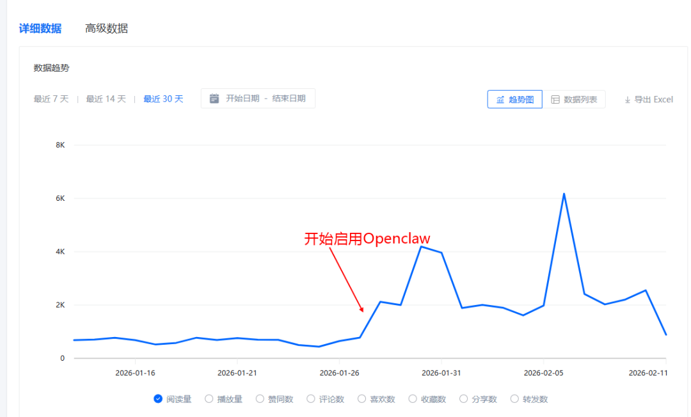
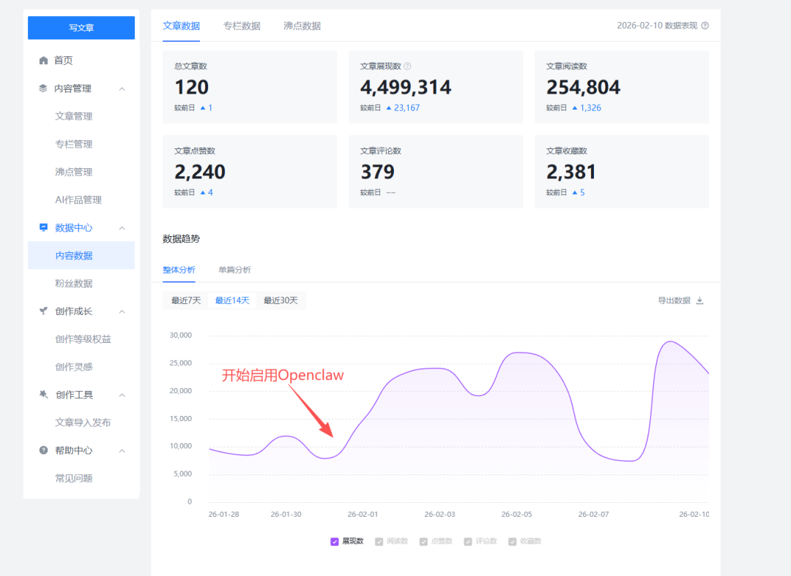

大家好，我是孟健。
我现在写一篇文章，从选题到全平台发布，只要 10 分钟。
不是标题党。这是我过去几周真实跑通的流程：OpenClaw Agent 帮我写初稿 → 自动推送飞书 → 字流一键分发 14 个平台。从头到尾，我只做两件事——确认选题，点击发布。

今天把这个流程完整拆给你看。
01 先说结果
以前我写一篇文章，至少 2-3 个小时：
选题 30 分钟
写作 1-2 小时
排版+配图 30 分钟
各平台手动发布 30 分钟
现在：
选题：Agent 每天 9 点自动推送 5 个选题到我 Telegram，我选一个
写作：Agent 5 分钟出初稿，我花 5 分钟改
排版：自动推 飞书，格式已经排好了
发布：打开字流，一键发 14 个平台
从 3 小时缩到 10 分钟。省出来的时间，我拿去做产品了。

02 我的 OpenClaw Agent 架构
我搭了一个叫"墨笔"的内容 Agent（名字是我起的，听着像个老编辑）。
它不是通用 AI 助手。它有明确的职责边界：
只管内容——图文、短视频、社交媒体
有自己的人格——嗅觉敏锐、表达锋利、有主见
读过我所有历史文章——知道我的写作风格、用词习惯、标题偏好
绑定了我的工具链——飞书 API、字流 API、Twitter API
关键配置：
SOUL.md：定义 Agent 的角色和边界。我写了它的核心职责、写作风格要求、工具权限、发布规则。一句话：你是谁，你能做什么，你不能做什么。

写作风格文件：我整理了一份 3000 字的风格规范，从开头模式（"大家好，我是孟健" + 第二句必须"炸"）、到标题公式（数字+成果+反差）、到结尾要求（"弹射"而不是"降落"）。Agent 每次写文章前必读这个文件。

这不是"帮我写篇文章"这种一次性 prompt。这是一个有记忆、有风格、有流程的持久化写作系统。
03 每天 9 点：自动选题推送
我设了一个 cron 定时任务，每天早上 9 点，Agent 自动执行：
用 Grok 搜 X/Twitter 上过去 24 小时的 AI 热点
用 Brave Search 搜 Google 最新资讯
结合我的定位（AI 编程+出海+创业），筛选 5 个选题
每个选题给出：备选标题、热度评分、切入角度、核心要点
推送到我的 Telegram
我早上吃早饭的时候扫一眼，回复一个数字——"写 1"，Agent 就开始干活。

以前：我每天花 30 分钟刷信息流找选题，还经常选不出来。
现在：选题找我，不是我找选题。
04 5 分钟出稿：Agent 怎么写文章
选完题后，Agent 的工作流：
第一步：素材收集
搜索相关资讯和数据（串行搜索，不并发，避免触发限制）
从我的记忆库里找相关经历（比如我之前逆向 Copilot 的经验、出海踩坑）
拉取技术文档和开源项目信息
第二步：按我的风格写初稿
开头"大家好，我是孟健" + 第二句炸弹
结构：模块化分段，编号清晰
每 500 字一句可截图金句
所有场景用 before vs after 对比
2000-3000 字控制篇幅
结尾"弹射"——一句狠话收束
第三步：自动推 飞书
调飞书 API 自动创建文档
Markdown 内容自动转飞书格式
图片自动上传到飞书
生成飞书链接发给我
我打开链接，通读一遍，改几个表述，确认 OK。
整个过程 Agent 完全自动，我只在最后做质量把关。

05 字流一键发布：10 分钟到 14 个平台
文章确认后，打开字流（ziliu.online，这是我自己做的产品）：
从飞书复制 Markdown 到字流编辑器
字流自动适配各平台的排版格式——知乎、掘金、B 站、小红书等平台的格式要求都不一样，字流帮你搞定
点"一键发布"，Chrome 扩展自动填充各平台编辑器
14 个平台，10 分钟全部发完

最新升级：我刚给字流加了 API 接口，Agent 写完文章后可以直接通过 API 把草稿推到字流，连"打开飞书复制"这一步都省了。流程变成：
Agent 写稿 → 自动推字流草稿 → 我打开字流 → 一键发布
06 几个关键细节
风格文件是核心。 没有这个文件，AI 写出来的文章你一眼就能看出是 AI 写的——用词空洞、结构模板化、没有个人特色。有了风格文件，Agent 写的初稿至少有我 70%的味道，改起来很快。
记忆系统很重要。 Agent 会把每天的工作记录写入记忆文件（memory/日期。md），包括写了什么、发了什么、用了什么数据。下次写稿时，它能引用之前的内容，不会自相矛盾，也不会重复写同样的选题。
绝不自动发布。 这是铁规则。Agent 再聪明，也可能出错——事实错误、措辞不当、判断偏差。所有内容必须经我确认才能发。AI 负责效率，人负责质量底线。
cron 定时任务是灵魂。 很多人用 AI 写文章，但都是"想起来了才用"。定时任务让这件事变成系统——每天 9 点选题推过来，你不得不面对它。这种"被推着走"的感觉，比"我今天要不要写篇文章"有效 10 倍。
07 实际效果
话不多说，直接看我全平台的数据效果：



最大的变化不是速度，是心态。 以前写文章是个"重决策"——要不要写、写什么、什么时候写。现在是个"轻决策"——选题已经在那了，日更就好，太轻松了！
08 你也想搭？核心步骤
写一份你的风格文件：分析自己过去 10 篇最好的文章，提炼开头模式、标题公式、结构习惯、常用口语。这是最花时间但也最值的一步。
配置 OpenClaw Agent：SOUL.md 定义角色，TOOLS.md 接入工具（飞书/字流/搜索），设置 cron 定时任务。
接入发布工具：如果你用字流，直接对接 API；如果用其他工具，让 Agent 输出标准 Markdown 就行。
跑两周磨合：前两周你需要改比较多，Agent 会从你的修改中学习。两周后，初稿质量会稳定在 70-80 分。
坚持"人工审核"红线：无论 Agent 写得多好，发布前你必须通读一遍。这是底线。
1 个月前，我每天纠结"今天写什么"。现在，Agent 比我先 开始办公 。
如果你也在做个人 IP，还在手动写、手动发、手动选题——想想看，你真正的价值是"敲键盘打字"，还是"判断什么值得说"？
把重复的交给系统，把判断留给自己。
Openclaw交流群（群满在公众号后台回复openclaw入群）：
OpenClaw小白实战视频课程（手把手教你如何搭建OpenClaw实践）

🚀 想要与更多AI爱好者交流，共同成长吗？

📚 精选文章推荐
Vibe Coding 已死，Karpathy 说未来叫 Agentic Engineering OpenClaw 2.6 调教实录：从崩溃 4671 次到省 50% token 吹爆 OpenClaw！一个人 +6 个 AI 助理，我再也不想招人了 16 个 AI Agent 协作从零写出 C 编译器，还能编译 Linux 内核——Claude 4.6 做到了 神仙打架！Claude Opus 4.6 vs GPT-5.3-Codex 同日发布，AI 编程格局要变了 Claude 一个插件，让全球软件股蒸发 2850 亿美元 我做了个 OpenClaw 入门站，7天教程 + 70篇资源全网最全 OpenAI 放大招：Codex 独立 App 上线，一次跑 10 个 AI Agent 帮你写代码 OpenClaw 101 上线啦！7 天从 0 跑到自动化（35+ 教程已整理） 月费 8 块的 AI 私人助手，不会写代码也能搭（OpenClaw 零基础教程）